Saipan: Thanksgiving 2018
Travel
20 November 2018

Randy likes to think the word of our trip was “wrecked.” Granted, he did say it a lot (“that house/hospital/school is wrecked”), but I like to think the word of our trip was “bittersweet.” Much more sweet than bitter though- like a really good dark chocolate.
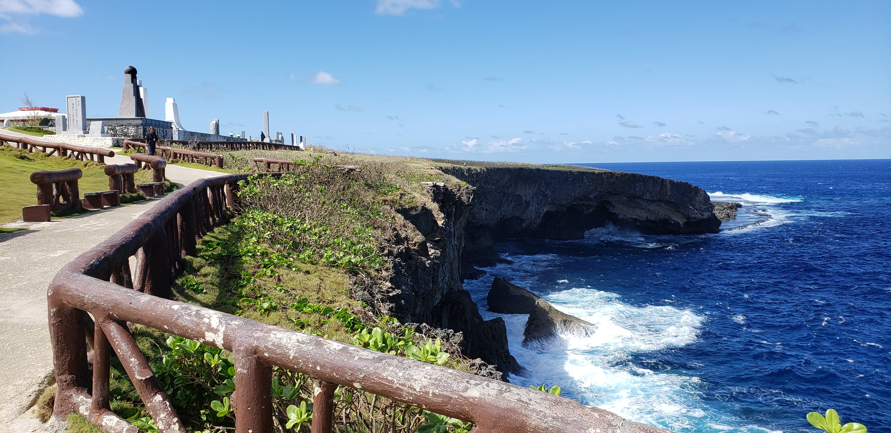Most Americans don’t realize what or where Saipan is. Even my dive instructors, who are well-traveled, had no idea. This is fair considering that it’s 7,000 miles away (at least, that’s how many miles we flew to get there). However, it is strange that Saipan is part of the United States, has suffered through the worst storm ever to hit U.S. territory, and no mainland news media ever covered it.

Honestly, I probably would have continued to live my life without any of this knowledge had our cousins not moved there and been living there for a couple years. Randy, knowing better than myself, decided six months ago that we should buy tickets and go see this tropical paradise. Of course, I was game.

Then disaster struck the island a week before Halloween. A super typhoon “wrecked” the island, raising 200 mph winds, cars, and roofs. Amazingly enough, there was only one fatality from this storm. Lane and Katie were able to survive the storm in their bathtub with their mattress over top.

Luckily, FEMA and Red Cross were able to act pretty quickly. The airport had been damaged, and the entire island had lost power. However, most of the airport structure was alright as well as the runway. Nearby islands of Guam and Rota had supplies ready to ship to Saipan. The flooding was widespread, and the ocean runoff turned the gorgeous coral beaches into debris cesspools.
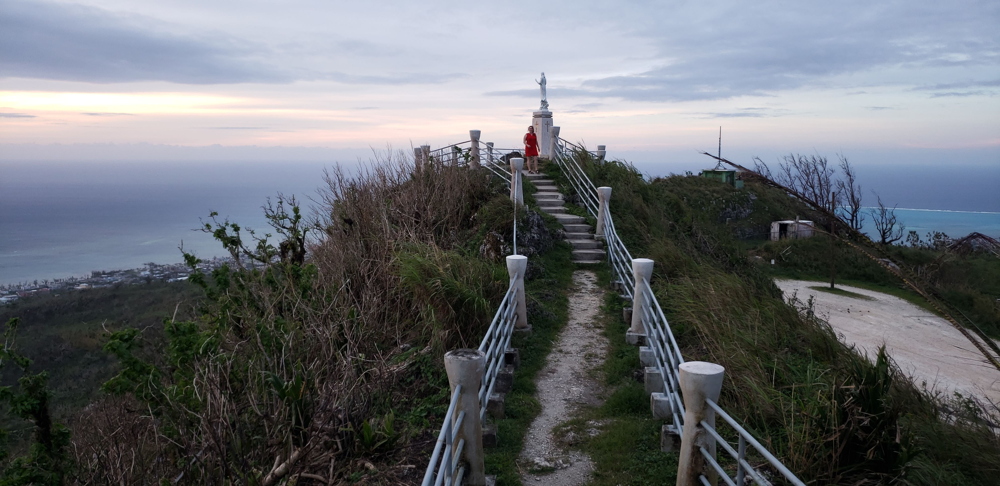After some very uncertain messages, ominous emails from United, and survivor guilt, what were two tourists far-removed from the situation to do with their vacation plans? We went anyway, of course. We felt pretty confident that we would get through, and by the time we got there, everything on the island would be much better. So we packed our suitcases with solar panels, battery-powered fans, and sleeping hammocks. We grabbed our passports and made the 29-hour trip to the other side of the world.
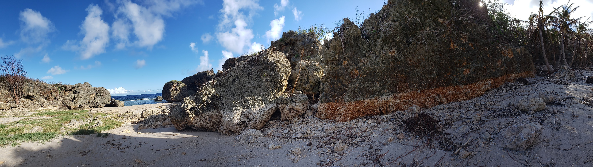By the time we landed in Saipan, Randy and I knew we had made the right decision. We felt energetic enough to see the Suicide Cliffs, snorkel at Bird Island, and take some photo ops.

I never knew how important the Northern Mariana Islands were to winning World War II. Tinian, another small CNMI island, was actually where the Enola Gay took off from, carrying the two atomic bombs that were dropped on Hiroshima and Nagasaki. However, Saipan has her own unique history in the war. This is important to note, as much of our trip includes a lot of World War II.
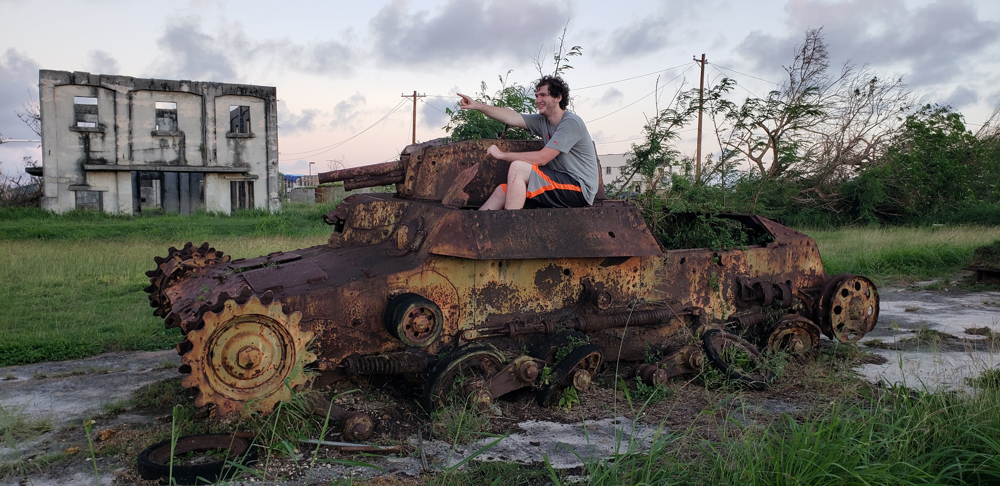The natives of Saipan are the Chamorro people. Magellan was the first European to ever set foot on Guam, and this affected Saipan as well-negatively, for the most part. The island changed hands several times (US occupied it after the Spanish-American war, then it was sold to Germany by Spain). However, Japan truly changed Saipan’s economy when it occupied the island before World War II. 42,000 Japanese day laborers moved there and built railways, sugar cane refineries, power plants, and distilleries.

While the US did secure the island during World War II and ultimately gained occupation of it in the Marshall Plan, it was a battle hard-won. Because of the loyalty to the Emperor and Japanese propaganda against America, 4,000 Japanese civilians threw themselves off the cliffs of Saipan when they saw the US Marine Occupation.

The Suicide Cliffs became a hollow victory for the US and a hard lesson to Japan about how much brainwashing could come from negative advertising. Only about 1800 Japanese were taken alive in Saipan.

Saipan was also home to the largest banzai attack of World War II. Banzai is defined by a Japanese culture of honorable suicide (seppuku and kamikaze are also parts of this culture). This largest charge took place in 1944 when 7,ooo Japanese fighters made a hopeless last attack and broke through the 1st and 2nd Battalions of the 105th U.S. Infantry. 4300 were killed, but they took down 650 US with them.
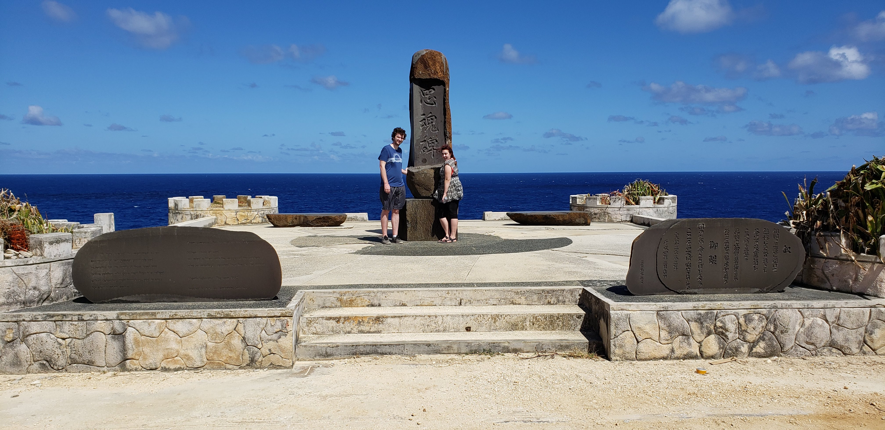This bit of long-winded historical trivia will become relevant as I relate the rest of our trip. On the second day, we saw more of the devastation on the island and we went to some historical sites.
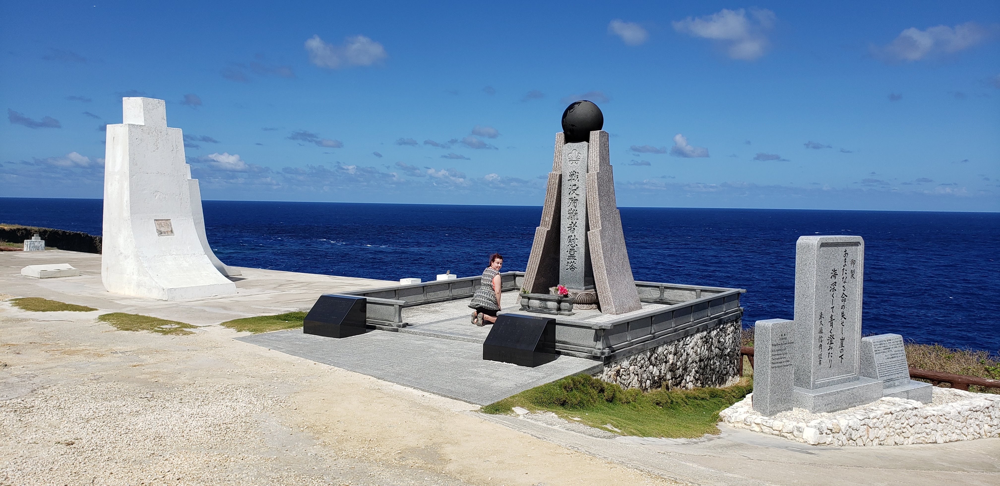By the time we got there, most of the island was trying to settle back into its routine. The above picture was shot out of a gaping hole where a window used to stand in Lane and Katie’s house. To have such a picturesque sun rise over the fallen homes and torn roofs was again, a little bittersweet.

The island’s economy now relies a lot on tourism - mostly of the Chinese and Korean persuasion. And there are many museums and sites for any history buff. In fact, just to give Asian tourists a taste of what America is like, there are pink Mustangs for rent and shooting ranges all over the island. It is ironic that I went 1500 miles from Japan so that I could get photos of me with big bowls of ramen in front of a statue of Buddha, and somewhere on the island there is a Chinese girl getting a photo with a Catholic church, a pink Mustang, and a gun. I guess we all want a little cultural appropriation.

We also walked along the amazing beachfront of Saipan. The coral reefs surround the island and keep it safe from too much surf.

There are tanks all over this stretch of beach, because this is the landing site of the U.S. during the war. I like to think that even in the stress of battle, those soldiers probably looked at that stretch of paradise as the most gorgeous place to land an M4 Sherman that they had ever seen.

Because we were willing to hike into some fallen jungle and be the first tourists to arrive after a major storm, we also got an entire beach to ourselves! Hidden Beach was a great end to the day.

Full of crystal clear water, a shady pool, and an inviting staircase that could lead you to your death, we made sure to only wade in the safe spots.


On our third day to the island, we went scuba diving!! I was so excited to be able to put my training to good use. We did two dives - one of a torpedoed shipwreck, and one of a sunken B-29. Afterwards, we swam out to one of the tanks that had been abandoned in the water.
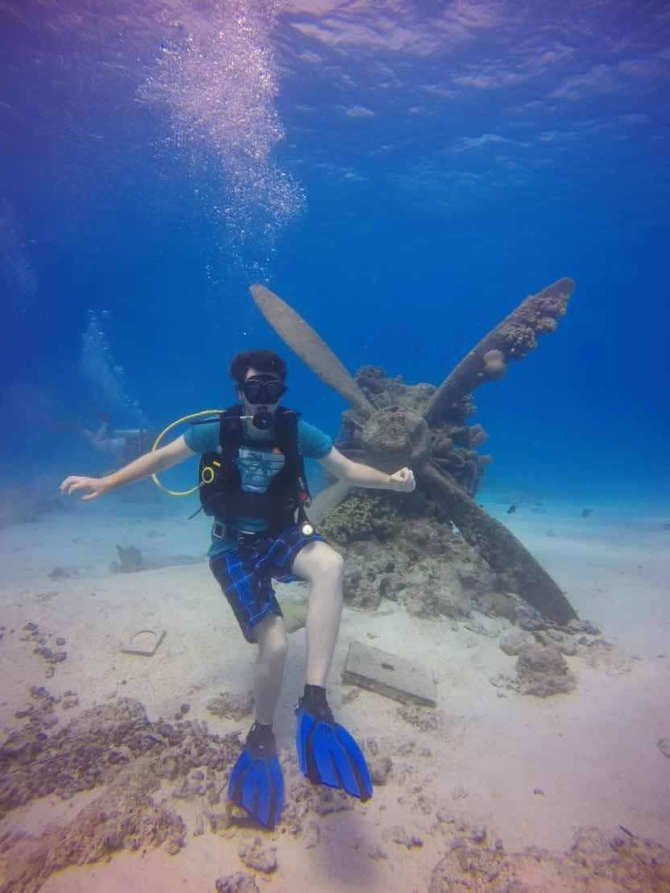On our fourth day, we saw so many things: Banzai Cliff, a lot of WWII memorials, the last Command spot of the Japanese, Chamorran historic houses, and Kalabera Cave.
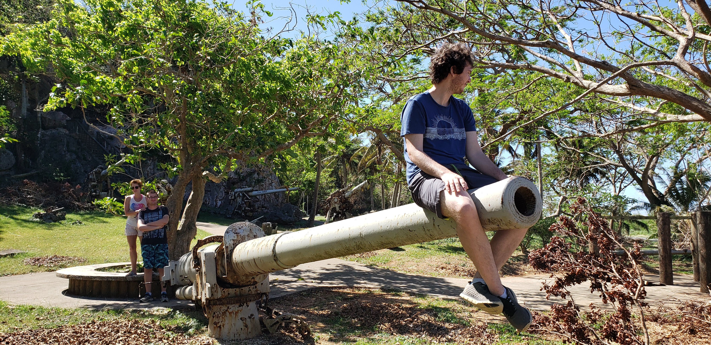Banzai cliff is where many soldiers and civilians jumped to their deaths to avoid American capture. It is the site of many peace shrines and commemorative headstones.

Chamorran history is known for the Latte stones upon which ancient tribes built their houses. Beside Kalabera Cave are replicas of what those houses probably looked like.

Chamorrans treat the dead as very sacred. There are pictures on the cave walls meant to represent ancestors. These indigenous people would often use the bodies of deceased relatives to makes tools. They also kept the skulls of relatives in baskets in their homes. It was a way to keep their loved ones close to them.

On the fifth day in Saipan we went to PauPau beach and did some awesome snorkeling. We also walked around a creepy abandoned mall and saw a lot of toads there.

PauPau beach had wonderful visibility. I saw an eagle ray from 20 feet away, and it was huge. We also found some amazing shells there. I found a tiger cowrie shell. But it still had something living in it. So we left it be.


Our sixth day in Saipan was Thanksgiving! We spent the day at Managaha, a little island about a mile from Saipan. This island is great for taking a day trip out to snorkel. We spent the whole day drinking Dr. Pepper and viewing the coral reefs. The fish on this island were particularly aggressive, because they are used to Asian tourists feeding them. They are not camera shy, and one even bit Katie’s toe. No blood.

Managaha represented the perfect island getaway, especially since it is probably only about a mile around. Again, because there were no tourists visiting the island, we practically had our own private vista. We also saw about seven different reef sharks here. They were little guys, but still very fast and shy.

On our seventh day in Saipan, we went scuba diving two more times! This time, we went to depths closer to 60 feet, and we saw sea turtles! Our first dive was to Dimple Point. This dive had loads of fish, massive coral reefs, and even a sea turtle. Our guide handed us each a piece of hot dog and we got to feed the fish.
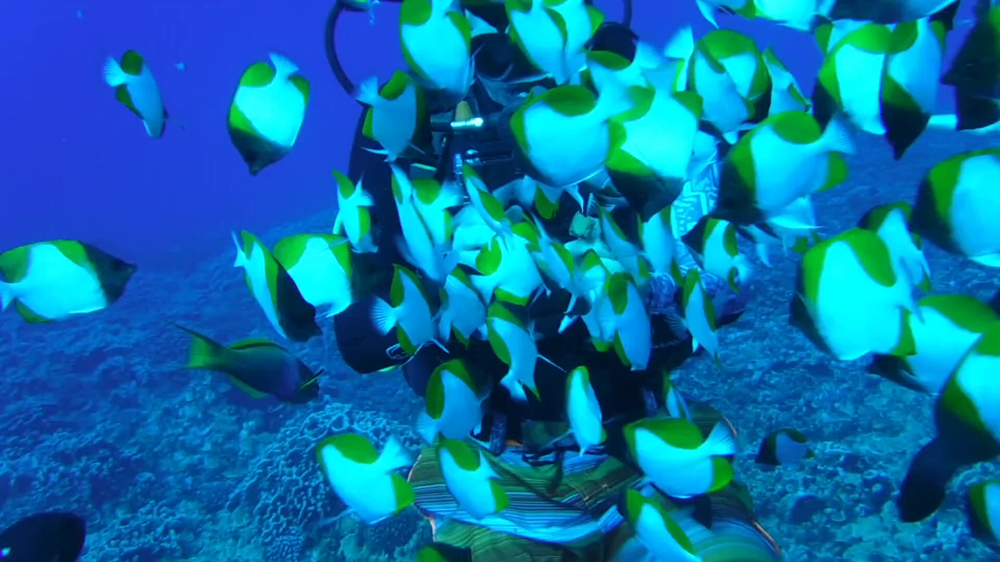 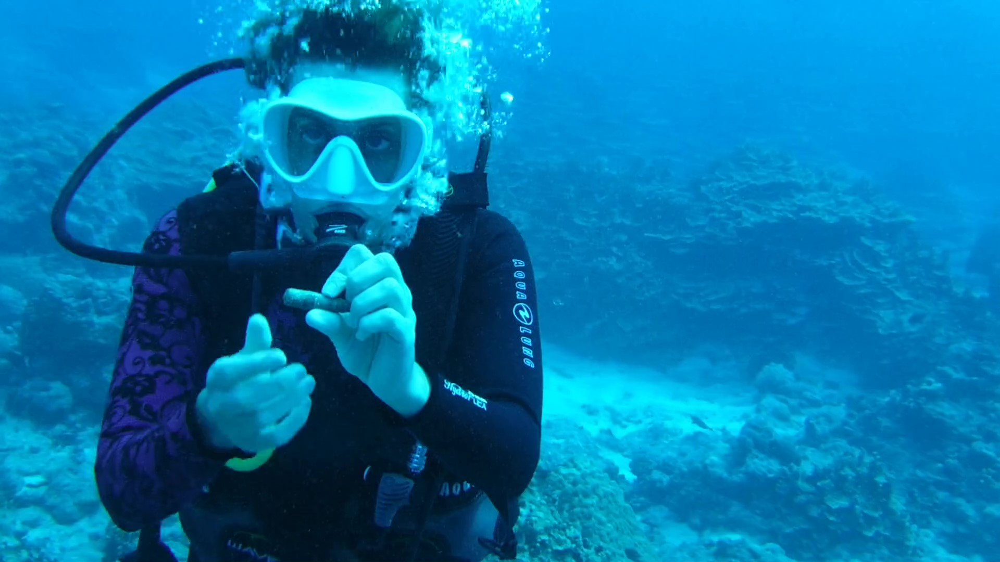On our second dive, we saw a different type of sea turtle. Our guide said this one had a “cuter face.” Katie also found a WWII bullet. We also saw a whole school of rays and a hidden sea turtle.
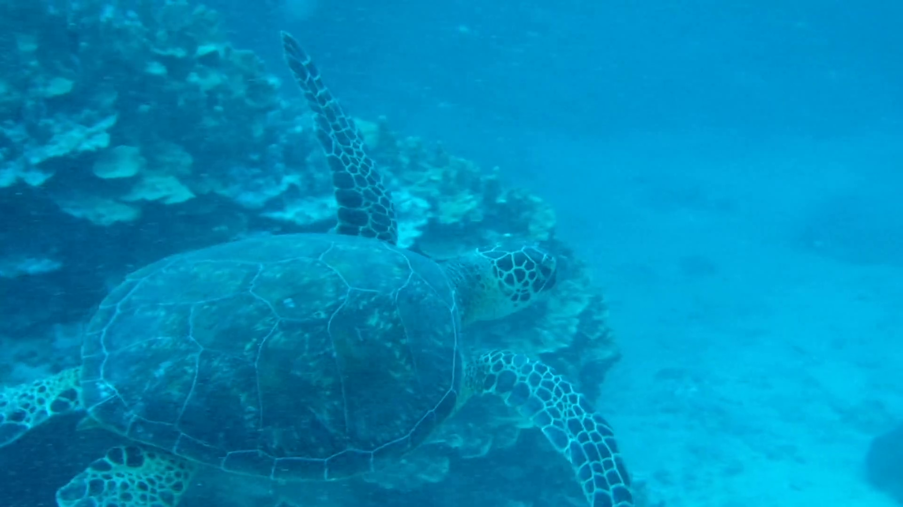It would be impossible to say all the things we did in Saipan. This is the briefest recounting of an eight-day vacation (and it’s not that brief). On our last day in Saipan, we snorkeled in the Grotto, ate good food, and said good-bye to everything we would miss about this island.
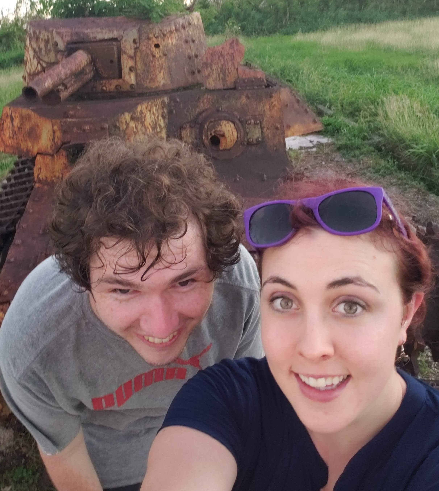
Saipan was very good to us. We truly had a wonderful time, and the lack of electricity or air conditioning couldn’t take away from that. It was hard to witness seeing the generator turned on every night, knowing this might be a lot of the island’s reality for months to come.
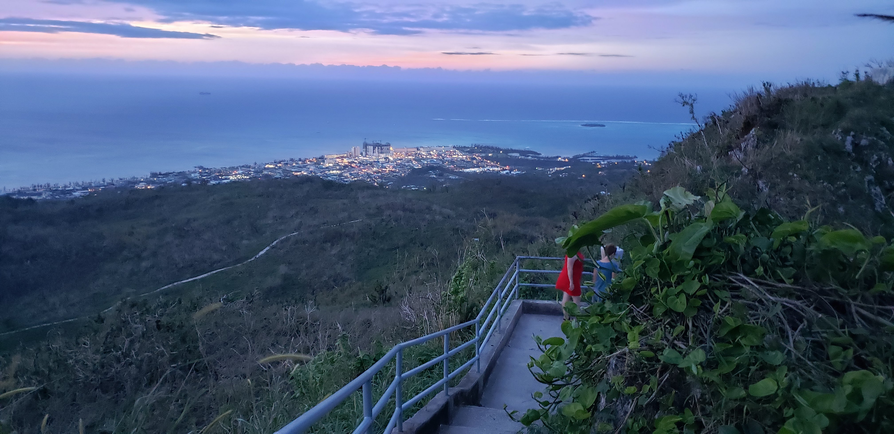It was hard appreciating the fact that we had our own personal paradise and knowing that the island’s economy thrives off tourism. Two days before we left, the airport opened its Hong Kong flight, and we began to see the island the way it is when tourists flock to the island. No more private beaches for us.
And ultimately, it was hard knowing that Saipan’s beauty is founded on such a violent history. For all her spectacular sites and mixed culture, she is a land of change. Though a mixing pot of Asian and European influences, she continues to have her own very unique flavor.
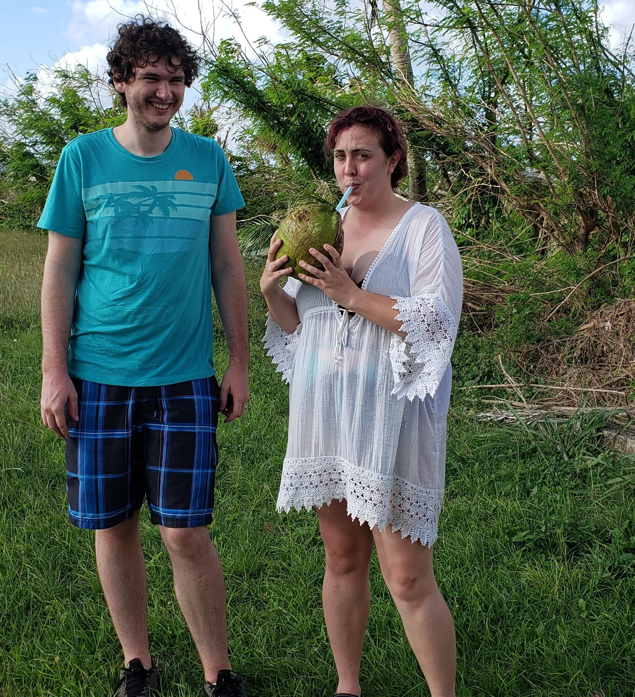She taught us a lesson about how we must be open. Not just to new ideas, but also to loss.
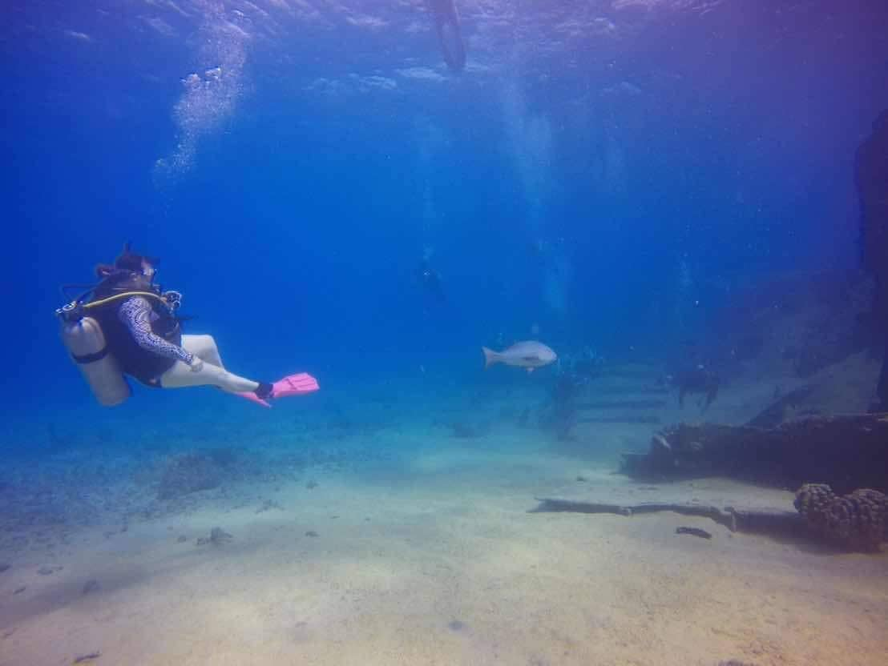Saipan was more amazing for us than we ever could have imagined. We got to witness so much diversity of life, so much new growth, and so much outpouring of love from everyone on the island.
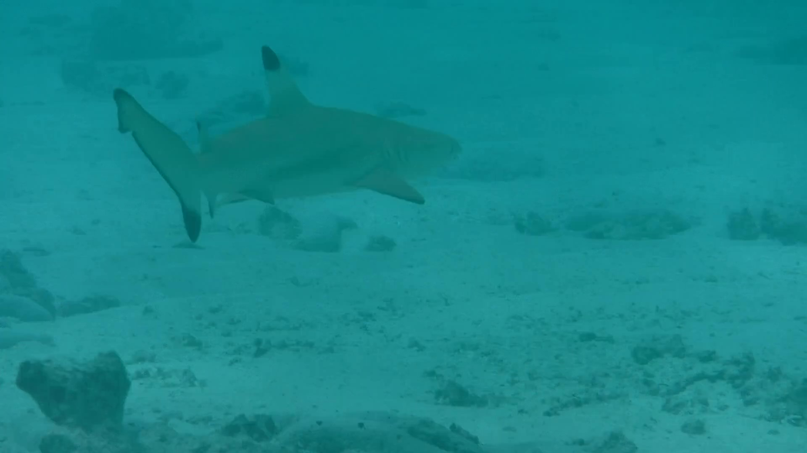
Hafa Adai and farewell! Peace to Saipan forever.
For more trip pictures, visit my Facebook page!